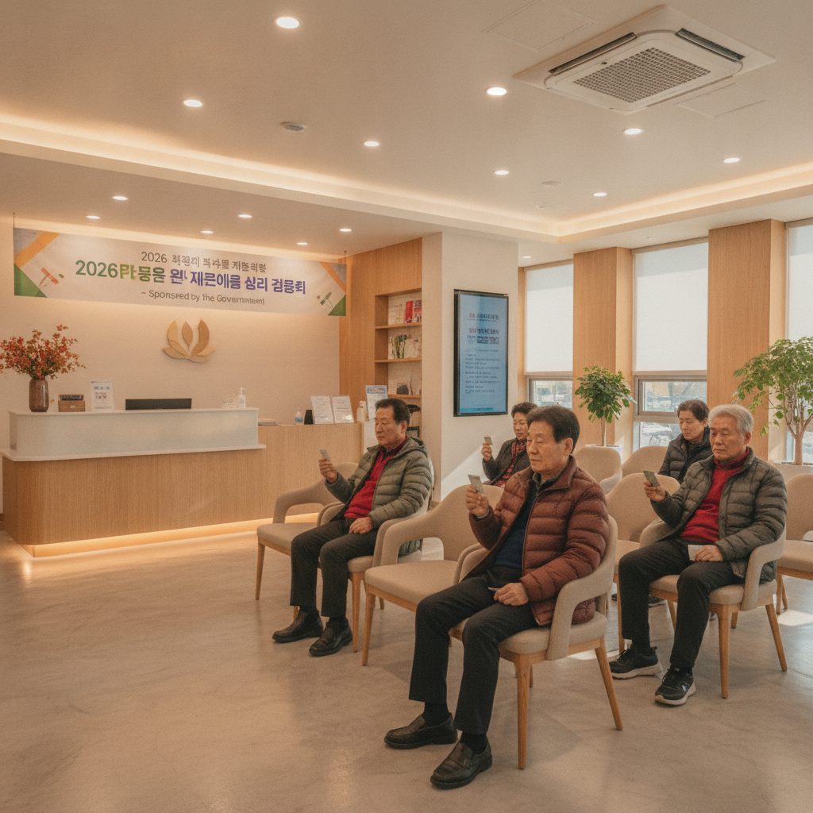
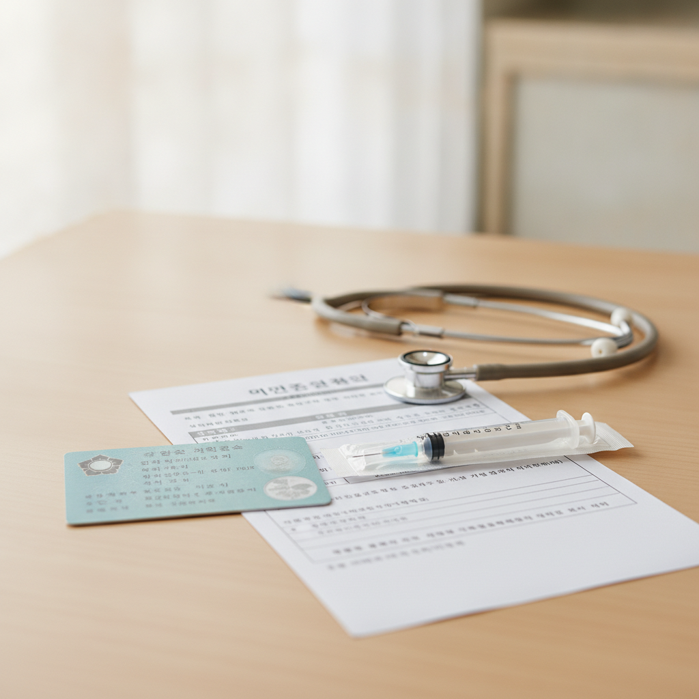

어르신 독감 무료접종 언제부터 — 2026 연령별 시작일표와 지정 병원 찾는 순서
2026년 가을 질병관리청 어르신 인플루엔자(독감) 국가 무료 예방접종은 혼잡을 방지하기 위해 연령대별로 순차 개시되며, 75세 이상(1951년생 이전)은 10월 6일(화)부터, 70~74세는 10월 12일(월)부터, 65~69세는 10월 15일(목)부터 시작됩니다.
주민등록상 주소지와 관계없이 전국 약 2만여 개 지정 위탁의료기관(동네 내과·이비인후과·가정의학과 등) 어디서나 전액 무료로 접종받을 수 있으며, 방문 시 본인 확인용 신분증(주민등록증·운전면허증) 지참이 필수입니다.
질병관리청 예방접종도우미 누리집을 통해 가까운 지정 병원과 당일 백신 보유 잔량을 확인하는 4단계 순서표와 접종 전후 필수 점검 사항을 확인하세요.

어르신 독감 국가 무료접종 지정 병원 안내 창구 접수 모습 / AI 제작 이미지
01 | 2026년 가을 어르신 독감 무료접종의 핵심 일정 요약
질병관리청이 주관하는 어르신 인플루엔자(독감) 국가예방접종 지원사업은 환절기 고령층의 건강을 보호하기 위해 매년 가을 시행되는 국가 필수 복지 제도입니다. 지원 대상은 만 65세 이상 어르신(2026년 기준 1961년 12월 31일 이전 출생자) 전원입니다.
올해 2026-2027절기 접종은 조기 유행 가능성과 의료기관 내 대기 인원 분산을 감안하여 연령별로 접종 개시 시점이 세 단계로 나뉘어 진행됩니다. 가장 고령층인 75세 이상부터 먼저 시작하고, 순차적으로 연령대를 넓혀가는 방식입니다.
접종 기한은 2027년 4월 30일까지 넉넉하게 운영되므로 개시 첫날 무리하게 줄을 서기보다는 본인의 건강 상태가 양호하고 병원이 한적한 날을 골라 여유롭게 방문하시는 것이 안전합니다.
02 | 출생연도 및 연령 구간별 무료접종 시작일표
병원에 헛걸음하지 않기 위해서는 본인의 주민등록상 생년월일이 어느 구간에 해당하는지 반드시 미리 확인해야 합니다. 연령 기준에 미달하는 날짜에 방문할 경우 전산 등록이 불가능하여 무료 접종을 받을 수 없습니다.
| 대상 연령 구간 | 출생연도 기준 | 무료접종 시작일 | 접종 종료일 |
|---|
| 만 75세 이상 어르신 | 1951년 12월 31일 이전 출생자 | 2026년 10월 6일 (화) ~ | 2027년 4월 30일 (금) |
| 만 70세 ~ 74세 어르신 | 1952년 1월 1일 ~ 1956년 12월 31일 | 2026년 10월 12일 (월) ~ | 2027년 4월 30일 (금) |
| 만 65세 ~ 69세 어르신 | 1957년 1월 1일 ~ 1961년 12월 31일 | 2026년 10월 15일 (목) ~ | 2027년 4월 30일 (금) |
위 시작일은 전국 모든 지정 병원에 공통으로 적용됩니다. 한 번 시작일이 도래하면 종료일까지 언제든 무료 접종이 가능하므로, 75세 이상 어르신이 10월 중순 이후에 70세 어르신과 함께 병원을 방문하여 동시 접종하는 것도 가능합니다.
03 | 주소지와 무관하게 전국 어디서나 — 지정 위탁의료기관 제도
독감 국가예방접종의 가장 편리한 점은 '주소지 제한이 없다'는 것입니다. 주민등록상 주소지가 지방이나 시골로 되어 있더라도, 현재 자녀 집에 머물고 있거나 서울·수도권 등 타 지역에 체류 중이라면 거주지 인근의 지정 의료기관 어디서나 동일하게 무료 혜택을 받을 수 있습니다.
접종 기관은 전국 약 2만여 개소에 달하는 위탁의료기관으로, 동네 주변의 흔한 내과, 가정의학과, 이비인후과, 소아청소년과, 정형외과 등 1차 의료기관 대다수가 참여하고 있습니다.
보건소에서도 접종을 시행하지만 보건소는 지자체별 운영 방침에 따라 접종 요일이나 시간대가 제한적일 수 있으므로, 대기 시간이 짧고 접근성이 우수한 민간 지정 병의원을 이용하는 것이 훨씬 편리합니다.
04 | 예방접종도우미 누리집에서 지정 병원 및 백신 잔여량 찾는 순서
우리 동네 어느 병원이 지정 의료기관인지, 오늘 백신 물량이 남아 있는지 확인하는 가장 빠르고 정확한 디지털 확인 순서를 안내합니다.
질병관리청 예방접종도우미 지정 병원 조회 4단계
1단계: 포털 검색 및 누리집 접속
스마트폰이나 PC 인터넷 검색창에 '예방접종도우미'를 검색하여 공식 사이트(nip.kdca.go.kr)에 접속합니다.
2단계: [지정의료기관 찾기] 메뉴 선택
홈페이지 메인 화면 상단 또는 퀵 메뉴에서 [예방접종 관리] → [지정의료기관 찾기]를 클릭합니다.
3단계: 시·도, 시·군·구 및 접종 사업 선택
본인이 방문하고자 하는 지역(예: 서울시 송파구)을 선택하고, 사업 구분에서 [어르신 인플루엔자 지원사업]을 체크합니다.
4단계: 의료기관 목록 및 전화 확인
조회된 병원 목록에서 거리순, 병원명, 전화번호를 확인하고, 방문 당일 오전 해당 병원에 전화하여 "오늘 어르신 독감 백신 남아있나요?"라고 유선 확인 후 방문합니다.
접종 초기에는 특정 인기 병원에 접종 희망자가 몰려 당일 백신이 일시 소진될 수 있으므로, 방문 직전 전화로 보유 여부를 확인하는 것이 헛걸음을 막는 꿀팁입니다.

예방접종 전 문진표 작성과 본인 확인용 주민등록증 확인 / AI 제작 이미지
05 | 병원 방문 전 필수 지참 서류와 신분증 확인 요령
독감 국가 무료접종을 받기 위해 병원을 찾을 때 반드시 지참해야 할 것은 '본인 사진과 주민등록번호가 있는 신분증' 단 하나입니다.
국가 예산으로 지원되는 사업인 만큼 병원 전산망에 대상자의 본인 인증을 거쳐야 무료 처리가 완료됩니다. 인정되는 유효 신분증은 다음과 같습니다.
| 유효 인정 신분증 | 인정 불가 또는 주의사항 |
|---|
| 주민등록증 실물 또는 모바일 신분증 | 사진이 없는 신용카드나 단순 회원증 (인정 불가) |
| 운전면허증 실물 또는 모바일 면허증 | 주민등록번호 뒷자리가 가려진 서류 (보완 필요) |
| 유효기간이 남은 대한민국 여권 | 만료된 구여권 (인정 불가) |
| 건강보험증 (신분확인용) | 타인 명의 도용 방지를 위해 본인 직접 지참 원칙 |
부모님을 모시고 병원에 갈 때는 출발 전 가방이나 지갑 속에 주민등록증이 들어 있는지 반드시 확인해 드려야 합니다.
06 | 코로나19 백신 동시 접종 가능 여부와 접종 부위 원칙
질병관리청 지침에 따르면 65세 이상 어르신은 병원 방문 시 인플루엔자 백신과 코로나19 신규 백신을 같은 날 동시에 접종받는 것이 전면 허용되며 의학적으로 권고됩니다.
두 백신을 동시에 맞을 경우 의료기관 방문 횟수를 줄일 수 있고, 동절기 호흡기 감염병에 대한 종합적인 면역을 조기에 형성할 수 있는 이점이 있습니다.
동시 접종 시에는 면역 반응의 부작용 관찰과 국소 통증 분산을 위해 '왼쪽 팔과 오른쪽 팔에 각각 부위를 나누어 접종'하는 것이 표준 원칙입니다. 만약 하루에 두 대의 주사를 맞는 것이 부담스럽거나 평소 접종 후 미열이나 몸살을 심하게 겪었던 분이라면, 1~2주의 간격을 두고 독감 백신을 먼저 맞은 뒤 코로나19 백신을 나중에 맞는 것도 무방합니다.
07 | 접종 당일 지켜야 할 주의사항과 접종 후 대기 시간
예방접종 당일에는 안전사고를 예방하기 위해 몸 상태를 철저히 살펴야 합니다. 아침에 일어났을 때 37.5도 이상의 고열이 있거나 급성 감기 증상이 있다면 접종을 며칠 미루는 것이 현명합니다.
주사를 맞기 전 의사 문진 단계에서 현재 복용 중인 만성질환 약물, 최근 알레르기 반응 경험, 과거 백신 접종 후 이상반응 여부를 의사에게 솔직하고 상세하게 알려야 합니다.
가장 중요한 원칙은 접종 직후 곧바로 귀가하지 않고, 병원 대기실에 20분에서 30분 동안 가만히 앉아 이상반응이 나타나는지 관찰하는 것입니다. 드물게 나타날 수 있는 급성 아나필락시스 쇼크나 어지럼증 등은 대부분 접종 후 30분 이내에 발생하므로, 즉각적인 응급 처치가 가능한 병원 내에서 머무르는 것이 안전을 지키는 최선의 수칙입니다.
08 | 접종 후 나타날 수 있는 이상반응 대처법과 국가보상제도
접종 후 1~2일 동안은 주사를 맞은 팔 부위의 통증, 빨갛게 부어오름, 가벼운 근육통, 미열 등의 가벼운 반응이 나타날 수 있습니다. 이는 면역 체계가 정상적으로 항체를 형성하는 과정에서 발생하는 지극히 자연스러운 현상입니다.
접종 부위에 열감이 있다면 깨끗한 수건에 찬물을 적셔 냉찜질을 해주고, 미열이나 몸살 기운이 있다면 아세트아미노펜 계열의 해열진통제를 복용하며 충분한 수분 섭취와 휴식을 취하면 대부분 2~3일 이내에 호전됩니다.
만약 38.5도 이상의 고열이 지속되거나 호흡 곤란, 두드러기, 전신 부종, 극심한 현기증이 발생한다면 즉시 응급실이나 의료기관을 찾아 진료를 받아야 합니다. 국가예방접종 후 불가피하게 발생한 중증 이상반응에 대해서는 정부의 '예방접종피해보상제도'를 통해 진료비와 간병비를 지원받을 수 있습니다.
09 | 부모님 모시고 갈 때 체크해야 할 실전 체크리스트
자녀가 부모님의 독감 무료접종을 챙겨드릴 때 놓치기 쉬운 핵심 사항들을 체크리스트로 정리했습니다.
📋 어르신 독감 접종 자녀 동행 체크리스트
[ ] 출생연도 확인: 부모님 생신이 해당 연령대 시작일(10/6, 10/12, 10/15)에 맞는지 재확인.
[ ] 신분증 준비: 출발 전 지갑에 주민등록증 또는 운전면허증이 있는지 직접 점검.
[ ] 의복 선택: 소매를 위로 쉽게 걷어 올릴 수 있는 편안하고 헐렁한 상의 착용 권장.
[ ] 당일 컨디션 확인: 아침 체온 측정 및 감기·몸살 기운이 없는지 확인.
[ ] 사전 전화 확인: 방문할 병원에 전화해 당일 대기 인원과 백신 재고 여부 파악.
[ ] 접종 후 일정: 접종 당일은 무리한 외출, 사우나, 음주를 피하고 따뜻한 집에서 안정 취하기.
환절기 찬바람이 불어오는 계절, 부모님의 접종 시작일을 미리 캘린더에 메모해두시고 안전하고 편안하게 혜택을 챙겨드리시길 바랍니다.
#어르신독감무료접종
#2026독감예방접종일정
#독감백신시작일
#질병관리청예방접종도우미
#65세이상독감무료
#독감지정병원찾기
#독감코로나동시접종
#독감접종준비물신분증
#독감예방접종주의사항
#부모님독감접종